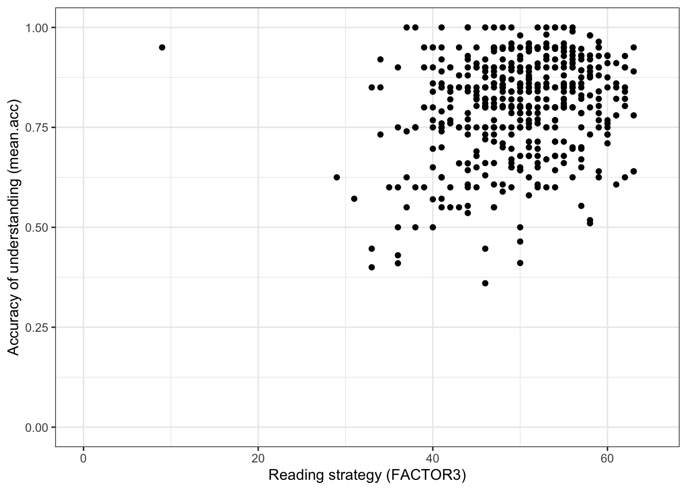
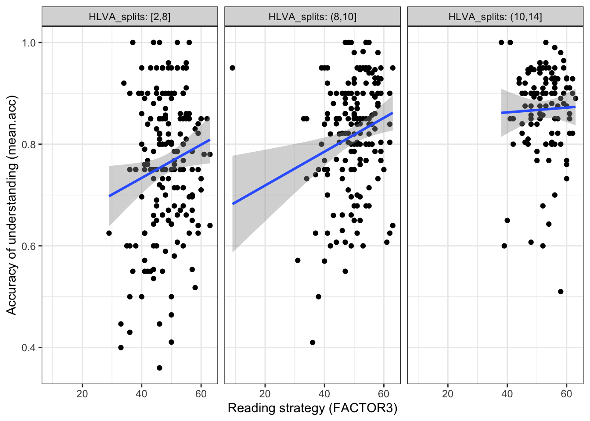
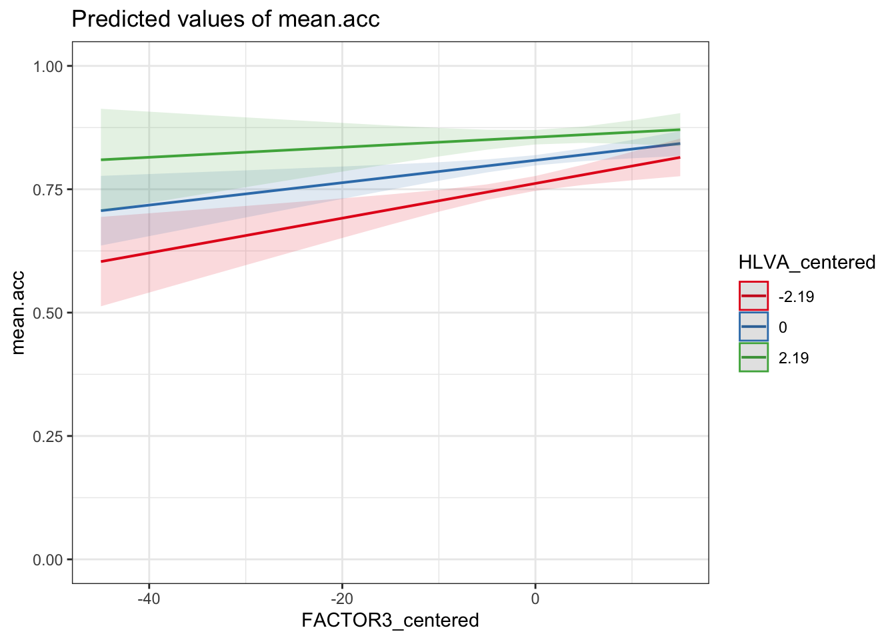

rm(list=ls()) PSYC122-w19-workbook-answers
Introduction
In Week 19, we aim to further develop skills in working with the linear model.
We do this to learn how to answer research questions like:
- What person attributes predict success in understanding?
- Can people accurately evaluate whether they correctly understand written health information?
In this class, what is new is our focus on critically evaluating the ways in which people, effects or results can vary using interaction analyses.
- This work simulates the kinds of interaction analyses that psychologists must often do in professional research.
Naming things
I will format dataset names like this:
all.data.csv
I will also format variable (data column) names like this: variable
I will also format value or other data object (e.g. cell value) names like this: all.data
I will format functions and library names like this: e.g. function ggplot() or e.g. library {tidyverse}.
The data we will be using
In this how-to guide, we use data from:
(1.) two 2020 studies of the response of adults from a UK national sample to written health information
study-one-general-participants.csvstudy-two-general-participants.csv
(2.) along with data recently collected from PSYC122 students.
These data have been joined together to create a dataset of over 400 observations. This is because it often requires a lot of evidence to be able to draw precise or accurate conclusions about potential interaction effects.
Answers
Step 1: Set-up
To begin, we set up our environment in R.
Task 1 – Run code to empty the R environment
Task 2 – Run code to load relevant libraries
library("ggeffects")
library("sjPlot")
library("tidyverse")── Attaching core tidyverse packages ──────────────────────── tidyverse 2.0.0 ──
✔ dplyr 1.2.0 ✔ readr 2.1.6
✔ forcats 1.0.1 ✔ stringr 1.6.0
✔ ggplot2 4.0.2 ✔ tibble 3.3.1
✔ lubridate 1.9.4 ✔ tidyr 1.3.2
✔ purrr 1.2.1
── Conflicts ────────────────────────────────────────── tidyverse_conflicts() ──
✖ dplyr::filter() masks stats::filter()
✖ dplyr::lag() masks stats::lag()
✖ ggplot2::set_theme() masks sjPlot::set_theme()
ℹ Use the conflicted package (<http://conflicted.r-lib.org/>) to force all conflicts to become errorsStep 2: Load the data
Task 3 – Read in the data file we will be using
The data file is called:
all-data.csv
Use the read_csv() function to read the data file into R:
all.data <- read_csv("all.data.csv") Rows: 478 Columns: 11
── Column specification ────────────────────────────────────────────────────────
Delimiter: ","
chr (5): participant_ID, study, GENDER, EDUCATION, ETHNICITY
dbl (6): mean.acc, mean.self, AGE, SHIPLEY, HLVA, FACTOR3
ℹ Use `spec()` to retrieve the full column specification for this data.
ℹ Specify the column types or set `show_col_types = FALSE` to quiet this message.Task 4 – Inspect the data file
Use the summary() function to take a look at the dataset.
summary(all.data) participant_ID mean.acc mean.self study
Length:478 Min. :0.3600 Min. :2.250 Length:478
Class :character 1st Qu.:0.7500 1st Qu.:6.200 Class :character
Mode :character Median :0.8300 Median :7.200 Mode :character
Mean :0.8066 Mean :6.967
3rd Qu.:0.9000 3rd Qu.:7.910
Max. :1.0000 Max. :9.000
AGE SHIPLEY HLVA FACTOR3
Min. :18.00 Min. :19.00 Min. : 2.000 Min. : 9.00
1st Qu.:21.00 1st Qu.:31.00 1st Qu.: 7.000 1st Qu.:46.00
Median :29.00 Median :35.00 Median : 9.000 Median :50.00
Mean :32.85 Mean :34.19 Mean : 8.929 Mean :49.84
3rd Qu.:43.00 3rd Qu.:38.00 3rd Qu.:10.000 3rd Qu.:55.00
Max. :76.00 Max. :40.00 Max. :14.000 Max. :63.00
GENDER EDUCATION ETHNICITY
Length:478 Length:478 Length:478
Class :character Class :character Class :character
Mode :character Mode :character Mode :character
Notice that we conducted a series of studies using the same online survey methods.
- Our data include the responses made by PSYC122 students.
Step 3: Work with different kinds of variables
It is an important skill in psychological data analysis to be able to:
(1.) identify the different kinds of data variables we are working with; (2.) adapt our methods depending on differences in kind (variable Class or type).
We learn about these skills, next, in exercises that combine some revision with some new moves.
Revise: consolidate what you know
Task 5 – Use summaries or plots to examine variables
Q.1. What is the median of the
FACTOR3variable in the dataset?A.1. You can use the
summary()function to calculate that the medianFACTOR3score is 50.00Q.2. Draw a histogram of the
FACTOR3distribution.A.2. You can write the code as you have been shown to do previously (e.g., in week 16):
ggplot(data = all.data, aes(x = FACTOR3)) +
geom_histogram(binwidth = 1) +
theme_bw() +
labs(x = "Reading strategy (FACTOR3)", y = "frequency count")
- Q.3. Examine the reading strategy (
FACTOR3) scores distribution: what does it tell you about the variation in the reading strategies of the participants in the sample? - A.3. The histogram shows that most participants present scores varying somewhere between 40-60 but there is a “long tail” of smaller numbers of participants with low or very low scores on the reading strategy (
FACTOR3) measure.
Extend: make some new moves
We can tell from the summary and the distribution that the FACTOR3 variable consists of numbers.
Another way to identify what kind of variable we have is by using a check question:
is.factor(all.data$FACTOR3)[1] FALSEis.numeric(all.data$FACTOR3)[1] TRUEThe is._() family of functions act like identity checks: what is this variable? These functions work like questions with TRUE or FALSE answers.
- Is this variable a factor? [TRUE or FALSE]
- Is this variable numeric? [TRUE or FALSE]
Revise: consolidate what you know
Task 6 – Identify (and change) what kind of variable – numeric or factor – a variable is
Hint: Task 6 – The is._() functions are available to ask what kind a variable is
Hint: Task 6 – The as._() functions can be used to change variable types
- Q.4. What kind of variable is
GENDER? - A.4. Use the same functions but change the variable name:
is.factor(all.data$GENDER)[1] FALSEis.numeric(all.data$GENDER)[1] FALSEQ.5. What do the
is._()functions tell us?A.5. The function calls tell us that
GENDERis not a factor and is not numeric.Q.6. If you look at the
summary()results, what does it tell you theClassofGENDERis?A.6. The summary shows that
GENDERis identified asClass: character.
You can check this by doing the is._() test again.
is.character(all.data$GENDER)[1] TRUE- Q.7. How do you change the class or type of the variable
GENDER? Change the variable’s type (Class) into a factor. - A.7. The
as._()functions can be used to change variable type, as you have done previously (e.g., in week 16).
all.data$GENDER <- as.factor(all.data$GENDER)- Q.8. What does a
summary()tell us aboutGENDER?
summary(all.data) participant_ID mean.acc mean.self study
Length:478 Min. :0.3600 Min. :2.250 Length:478
Class :character 1st Qu.:0.7500 1st Qu.:6.200 Class :character
Mode :character Median :0.8300 Median :7.200 Mode :character
Mean :0.8066 Mean :6.967
3rd Qu.:0.9000 3rd Qu.:7.910
Max. :1.0000 Max. :9.000
AGE SHIPLEY HLVA FACTOR3 GENDER
Min. :18.00 Min. :19.00 Min. : 2.000 Min. : 9.00 Female:323
1st Qu.:21.00 1st Qu.:31.00 1st Qu.: 7.000 1st Qu.:46.00 Male :155
Median :29.00 Median :35.00 Median : 9.000 Median :50.00
Mean :32.85 Mean :34.19 Mean : 8.929 Mean :49.84
3rd Qu.:43.00 3rd Qu.:38.00 3rd Qu.:10.000 3rd Qu.:55.00
Max. :76.00 Max. :40.00 Max. :14.000 Max. :63.00
EDUCATION ETHNICITY
Length:478 Length:478
Class :character Class :character
Mode :character Mode :character
- A.8. The summary will show how many different participants report themselves as belonging to one of the different
GENDERself-identification groups in the corresponding survey question.
You should see counts of the numbers of people in different GENDER level groups in the total survey sample:
GENDER Female:323 Male :155
We can see that 323 participants identified themselves as Female in the survey.
We can see that 155 participants identified themselves as Male in the survey.
Gender identity representation in survey samples
We note, here, that in addition to the numbers shown in the summary, six participants in the survey data entered the Non-Binary identification response option, and two participants entered the Prefer not to say option, in response to the gender identification question in the survey.
In the present exercises, we are looking at the way in which the effect on outcomes of variables – like variation in health literacy (HLVA) or reading strategy (FACTOR3) score – vary for different values of a categorical variable (like GENDER). These kinds of interactions become more complicated to analyse where there are more than two categories or levels in a factor, especially when the numbers of participants in one or more categories or levels is relatively small.
We think it is important to ensure representation of the responses and experiences of the full range of diversity among the populations we study. In future work, we hope to have collected sufficient numbers of observations from groups of participants like those entering responses like Non-Binary or Prefer not to say in order to be able to incorporate all possible between-group comparisons in analyses.
For now, we enter this explanation as a promise to to examine more representative samples in future work. Here is a link, for those who are interested, to reports of analyses of data from a survey conducted by a leading research organization (Pew Research Center). Follow the link to “Methodology” for information on how this organization exemplify good practice in obtaining representative samples.
https://www.pewresearch.org/social-trends/2025/05/29/the-experiences-of-lgbtq-americans-today/
Step 4: Now draw plots to examine associations between variables and to visualize interactions
Here, we are going to build on previous work to use plots to:
(1.) Examine the associations between pairs of variables, an outcome and a predictor (2.) Examine how the association between two variables can be different for different levels of a third variable
Scenario (2.) comes up if we are thinking about or working with interaction effects.
Consolidation: practice to strengthen skills
Task 7 – Create a scatterplot to examine the association between two numeric variables
Hint: Task 7 – We are working with geom_point() and you need x and y aesthetic mappings.
Here, we can look at the potential association between variation in reading strategy (using the FACTOR3 measure) and accuracy of understanding of health information (mean.acc).
Run a chunk of code to make the plot.
ggplot(data = all.data, aes(x = FACTOR3, y = mean.acc)) +
geom_point() +
theme_bw() +
labs(y = "Accuracy of understanding (mean.acc)",
x = "Reading strategy (FACTOR3)") +
xlim(0, 65) + ylim(0, 1)
This plot shows:
- the possible association between x-axis variable
FACTOR3and y-axis variablemean.acc.
The plot code moves through the following steps:
ggplot(...)make a plot;ggplot(data = all.data, ...)with theall.datadataset;ggplot(...aes(x = FACTOR3, y = mean.acc))using two aesthetic mappings
x = FACTOR3mapFACTOR3values to x-axis (horizontal, left to right) positions;y = mean.accmapmean.accvalues to y-axis (vertical, bottom to top) positions;
geom_point()show the mappings as points.theme_bw()changes the theme to a white background.labs(y = "Accuracy of understanding (mean.acc)", x = "Reading strategy (FACTOR3)")changes axis labels.xlim(0, 65) + ylim(0, 1)changes axis limits.
Questions: Task 7
Q.9. What do you notice about the distribution of
mean.accscores at increasing values of reading strategy (FACTOR3) scores?A.9. The scatterplot shows that, for increasing reading strategy (
FACTOR3) scores, there is an associated rise in accuracy of understanding (mean.acc) scores.There is extra credit for noticing that variation in outcome and predictor variable values is not tightly coupled: it is possible to have low reading strategy (
FACTOR3) scores and high accuracy of understanding (mean.acc).
Introduce: make some new moves
In the next sequence of exercises, we are going to take the all.data dataset and split it into parts (sub-sets) in different ways.
- We split the dataset vertically, into different sets of rows or observations.
Why are we learning how to do this?
The capacity to do this kind of split-analyse operation is extremely useful.
We are going to do this so that we can examine how the effects of interest to us (here, associations) can vary between different groups of people.
Remember, observations about different people are on different rows in
all.data.We are going to focus on an association between two column variables (
mean.acc,FACTOR3).We are going to identify different groups (sub-sets) of observations using values on a third variable.
Task 8 – Create a scatterplot to examine the association between two numeric variables, showing how the association is different for different values of a third variable
Hint: Task 8 – We are working with geom_point() again.
Hint: Task 8 – We can show how the association between two variables (mean.acc, FACTOR3) is different for different values of a third, categorical (factor), variable (GENDER) by splitting the plot so that we see the association for different levels of GENDER.
Here, we are splitting the dataset into:
- observation data from people with just
GENDERlevelFemale - observation data from people with just
GENDERlevelMale
and we are then producing a different scatterplot for each sub-set of data produced by the split.
Run the following chunk of code to make the plot.
ggplot(data = all.data, aes(x = FACTOR3, y = mean.acc)) +
geom_point() +
geom_smooth(method = 'lm') +
theme_bw() +
labs(y = "Accuracy of understanding (mean.acc)",
x = "Reading strategy (FACTOR3)") +
xlim(0, 65) + ylim(0, 1) +
facet_wrap(~ GENDER)`geom_smooth()` using formula = 'y ~ x'
This plot shows:
- the possible association between x-axis variable
FACTOR3and y-axis variablemean.acc - for different groups of people – people with self-reported
GENDERresponses ofFemaleorMale.
The plot code moves through steps we have seen before. What is new here is this bit:
facet_wrap(~ GENDER)
The function facet_wrap() splits the dataset into sub-sets (different parts): different sets of rows, where different sets are defined according to different values of the variable identified inside the brackets (~ GENDER).
Here, we are asking for different scatterplots for the dataset split by whether participants are coded as Female or Male for this survey.
You can see a general guide to the function here:
Questions: Task 8
Q.10. What do you notice about the distribution of
mean.accscores at increasing values of reading strategy (FACTOR3) scores, for different sub-sets of the data: for people withFemaleorMaleGENDERcoding?A.10. You can see that the association between
mean.accandFACTOR3scores appears to be mostly similar for differentGENDERcodes.The distribution of scores is different: we have more
Femaleparticipants; their scores vary more widely.But the trend is similar overall: the trend line representing the association between
mean.accandFACTOR3looks similar such that for both sub-groups in the sample, increasingFACTOR3scores are associated with highermean.accscores.
Hint: Task 8 – We can show how the association between two variables (mean.acc, FACTOR3) is different for different values of a third numeric variable (HLVA) by splitting the dataset
Here, we are first creating a new variable to code for (distinguish between) different sub-sets of observations (different rows in the dataset) based on HLVA scores, and then second drawing different plots based on different subsets.
We do this in two steps, as follows.
First, run a chunk of code to divide (cut) the dataset into parts:
all.data$HLVA_splits <- cut_number(all.data$HLVA, 3)The code works bit-by-bit like this:
all.data$HLVA_splits <-create a new variable,HLVA_splitsand add it to the datasetall.datagiven the work done by the bit of code on the right of the arrow<-.
On the right of the arrow <- …
cut_number(all.data$HLVA, 3)uses thecut_number(...)to divide the dataset observations into three sets based on the values in theall.data$HLVAvariable named inside the brackets.
The function works by ordering all the observations (the rows) in the dataset according to the values in the named variable all.data$HLVA, then splitting the dataset (here, into three sub-sets) based on values in that named variable.
- Given this code, we are going to get three sub-sets of the data, observations corresponding to (1.) low (2.) mid or (3.) high
HLVAvalues. - We split the data into data about people with:
(1.) low HLVA values, scores between 2-8 on the HLVA test; (2.) mid HLVA values, scores between 8-10 on the HLVA test; (3.) high HLVA values, scores between 10-14 on the HLVA test.
You can see a guide to the function here:
https://ggplot2.tidyverse.org/reference/cut_interval.html
Note that where we split the data (what ranges of scores we use) will depend on the sample.
Second, we draw a plot to examine if the association between two variables (mean.acc, HLVA) is different for different values of a third variable (SHIPLEY) by splitting the data:
ggplot(data = all.data, aes(x = FACTOR3, y = mean.acc)) +
geom_point() +
geom_smooth(method = 'lm') +
facet_wrap(~ HLVA_splits, nrow = 1, labeller = label_both) +
labs(y = "Accuracy of understanding (mean.acc)",
x = "Reading strategy (FACTOR3)") +
theme_bw() `geom_smooth()` using formula = 'y ~ x'
The plot code moves through the scatterplot production steps we have seen before.
The bit that is new is here:
facet_wrap(~ HLVA_splits, nrow = 1, labeller = label_both) which is included to use the data split, constructed earlier.
This addition allows us to show:
- the nature of the association between two variables (
mean.acc,FACTOR3) - for different values of the third variable (
HLVA) - by splitting the data into three sub-sets according to
HLVAscore (2-8 low, 8-10 mid, 10-14 high).
Questions: Task 8
Q.11. What do you notice about the distribution of
mean.accscores at increasing values of reading strategy (FACTOR3) scores, for different sub-sets of the data: for (1.) low (2.) mid (3.) highHLVAvalues?A.11. You can see that the association between
mean.accandFACTOR3scores appears to vary (the slope differs) given different values of the third variable (HLVA).Q.12. What do you think the values in the grey labels at the top of the facets (the plot panels) tell us?
A.12. The values tell us what values (e.g.,
2,8) are used to identify the range ofHLVAscores that have been used to define the sub-set of observations for which the plot below shows the association betweenmean.accandFACTOR3scores.
Step 5: Use linear models with multiple predictors, to estimate the effects of factors as well as numeric variables
Consolidation: practice to strengthen skills
As we saw in weeks 17 and 18, we can use linear models to predict outcome variables.
- Linear models can include numeric variables (like
FACTOR3orHLVA) as predictors. - Linear models can also include categorical variables or factors (like
GENDERorEDUCATION) as predictors.
Task 9 – First, fit a linear model including just numeric variables as predictors
Hint: Task 9 – We use the lm() function to fit a model with mean.acc as the outcome and FACTOR3 and HLVA as predictors.
Note that in this model:
FACTOR3is a measure of reading strategy – numeric scores correspond to a test of the relative effectiveness of the strategies participants use to read and understand written information;HLVAis a measure of health literacy – numeric scores correspond to a test of knowledge of health-related words.
model <- lm(mean.acc ~ FACTOR3 + HLVA,
data = all.data)
summary(model)
Call:
lm(formula = mean.acc ~ FACTOR3 + HLVA, data = all.data)
Residuals:
Min 1Q Median 3Q Max
-0.38243 -0.06507 0.01136 0.07686 0.27637
Coefficients:
Estimate Std. Error t value Pr(>|t|)
(Intercept) 0.4956473 0.0403305 12.290 <2e-16 ***
FACTOR3 0.0023489 0.0007874 2.983 0.003 **
HLVA 0.0217126 0.0024504 8.861 <2e-16 ***
---
Signif. codes: 0 '***' 0.001 '**' 0.01 '*' 0.05 '.' 0.1 ' ' 1
Residual standard error: 0.1139 on 475 degrees of freedom
Multiple R-squared: 0.1834, Adjusted R-squared: 0.18
F-statistic: 53.35 on 2 and 475 DF, p-value: < 2.2e-16If you look at the model summary you can answer the following questions.
Q.13. What is the estimate for the coefficient of the effect of the predictor,
FACTOR3(reading strategy)?A.13. 0.0023489
Q.14. Is the effect significant?
A.14. It is significant. Because
Pr(>|t|)equals0.003for theEstimateof the effect ofFACTOR3(reading strategy): this means that p < .05, and so the effect is significant.Q.15. What are the values for t and p for the significance test for the estimated coefficient of the effect of
HLVA(health literacy)?A.15. t = 8.861, p = <2e-16
Hint: Task 9 – Do you know how to intepret numbers like <2e-16? If you are unsure you can find out about scientific notation here:
https://www.calculatorsoup.com/calculators/math/scientific-notation-converter.php
- Q.16. What do you conclude are the effects of the
FACTOR3(reading strategy) andHLVA(health literacy) variables, as predictors of outcomemean.acc(accuracy of understanding of health information)? - A.16. The model slope estimates suggests that both predictors are significant, and that as both
FACTOR3(reading strategy) andHLVA(health literacy) increase, somean.accscores are predicted to increase also.
Task 10 – Second, fit a linear model including a numeric variable and a factor as predictors
Hint: Task 10 – We use the lm() function to fit a model with mean.acc as the outcome and FACTOR3 and GENDER as predictors.
Note that in this model:
FACTOR3is a measure of reading strategy – numeric scores correspond to a test of strategy awarenessGENDERis a self-report measure of gender identity
model <- lm(mean.acc ~ FACTOR3 + GENDER,
data = all.data)
summary(model)
Call:
lm(formula = mean.acc ~ FACTOR3 + GENDER, data = all.data)
Residuals:
Min 1Q Median 3Q Max
-0.43448 -0.06809 0.02190 0.09104 0.30596
Coefficients:
Estimate Std. Error t value Pr(>|t|)
(Intercept) 0.6074530 0.0415532 14.619 < 2e-16 ***
FACTOR3 0.0040658 0.0008237 4.936 1.1e-06 ***
GENDERMale -0.0108184 0.0120051 -0.901 0.368
---
Signif. codes: 0 '***' 0.001 '**' 0.01 '*' 0.05 '.' 0.1 ' ' 1
Residual standard error: 0.1228 on 475 degrees of freedom
Multiple R-squared: 0.05007, Adjusted R-squared: 0.04607
F-statistic: 12.52 on 2 and 475 DF, p-value: 5.036e-06If you look at the model summary you can answer the following questions.
Q.17. What is the estimate for the coefficient of the effect of the predictor,
FACTOR3(strategy)?A.17. 0.0040658
Q.18. Is the effect significant?
A.18. It is significant. Because
Pr(>|t|)equals1.1e-06for theEstimateof the effect ofFACTOR3(strategy): this means that p < .05, and so the effect is significant.Q.19. What are the values for t and p for the significance test for the estimated coefficient of the effect of
GENDER(level,Malecompared toFemale)?A.19. t = -0.901, p = 0.368
Q.20. Is the effect of
GENDERsignificant?A.20. It is not significant. Because
Pr(>|t|)equals0.635for theEstimateof the effect ofGENDERthis means that p > .05, and so the effect is not significant.
Hint: Task 10 – How do we know how to interpret estimates for the effects of factors? We discussed how R deals with factors in week 18, and discuss factors, and the effects of factors, in the week 19 lecture.
Q.21. How should we interpret the coefficient estimate for the effect of
GENDER?A.21. Though the effect is not significant, we can say that, on average, outcome
mean.accis -0.0108184 (slightly) lower forMalecompared toFemalecoded people.Q.22. What do you conclude are the effects of the
FACTOR3(strategy) andGENDER(Femalecompared toMale) variables, as predictors of outcomemean.acc(accuracy of understanding of health information)?A.22. The model slope estimates suggest that gender does not have a significant effect but that as
FACTOR3(strategy) scores increase, somean.accscores are predicted to increase.
Step 6: Use linear models with multiple predictors, including interaction effects
Introduce: make some new moves
As we saw through Task 8, it is possible that:
- the association between two variables (
mean.acc,FACTOR3) can be different for different values of a third categorical (factor) variable (GENDER); - the association between two variables (
mean.acc,FACTOR3) can be different for different values of a third variable (HLVA)
While we can examine these possibilities using visualizations, we often need to conduct statistical analyses to test interaction effects, or the ways in which the association between two variables can be different for different levels of a third variable.
We can extend linear models to include terms that allow us to test or to estimate interaction effects.
Task 11 – Center numeric variables before using them as predictors
Hint: Task 11
When we include numeric variables (e.g., FACTOR3, HLVA, SHIPLEY) in linear models, it can cause problems of interpretation or of estimation if we include the variables as they first come to us in datasets (as raw variables).
- It often helps our analyses to center variables on their means.
- Centering a variable means calculating its mean, and then subtracting that mean from every value in the variable column.
For example, to center values of the HLVA variable, we create a new column data$HLVA_centered by first calculating the mean of the data$HLVA variable, and then subtracting that mean from every row value in data$HLVA.
all.data$HLVA_centered <- all.data$HLVA - mean(all.data$HLVA, na.rm = TRUE)Q.23. Can you check what is going on when we center variables?
Hint: You can see what is happening when you run this code by first calculating the mean for
HLVA
mean(all.data$HLVA, na.rm = TRUE)[1] 8.92887then looking at column values in the new HLVA_centered column, compared to the original HLVA column:
all.data %>%
select(HLVA_centered, HLVA) %>%
print(n = 20)# A tibble: 478 × 2
HLVA_centered HLVA
<dbl> <dbl>
1 -1.93 7
2 -0.929 8
3 2.07 11
4 4.07 13
5 0.0711 9
6 -2.93 6
7 -1.93 7
8 -0.929 8
9 1.07 10
10 4.07 13
11 1.07 10
12 2.07 11
13 -0.929 8
14 1.07 10
15 1.07 10
16 1.07 10
17 3.07 12
18 1.07 10
19 -1.93 7
20 -2.93 6
# ℹ 458 more rowsWhat is the difference between the
HLVAandHLVA_centeredcolumns?A.23. You can see that every value in the
HLVA_centeredcolumn equals the value, on the same row, in theHLVAcolumn, minus the mean forHLVA.Q.24. Can you center the variable
FACTOR3?A.24. You can use the same code to center
FACTOR3:
all.data$FACTOR3_centered <- all.data$FACTOR3 - mean(all.data$FACTOR3, na.rm = TRUE)- Q.25. Can you center the variable
SHIPLEY? - A.25. You can use the same code to center
SHIPLEY:
all.data$SHIPLEY_centered <- all.data$SHIPLEY - mean(all.data$SHIPLEY, na.rm = TRUE)Why are we learning how to do this?
It is common in data analysis to want to transform variables before using them in analyses.
- Here, we are transforming predictor variables by centering them on their mean values.
The practical reason for doing this transformation now is because if we use uncentered (raw) numeric variables as predictors in linear models that involve interactions the model can find it difficult to distinguish between the effects of those predictors and the effect of their interaction.
Task 12 – Specify models to include interaction effects: interactions between two numeric predictor variables
Hint: Task 12
We use lm() to specify models, as we have been doing.
- What changes is that we now use the
*operator in our model code to specify interaction effects.
For example, let’s suppose that we want to examine the possibility that the effect of reading strategy (FACTOR3) on accuracy understanding (mean.acc) is different for different values of health literacy (HLVA).
- Here, we are considering the possibility that the association between reading strategy (
FACTOR3) and accuracy of understanding (mean.acc) varies. - We are considering the possibility that the the association between reading strategy (
FACTOR3) and accuracy of understanding (mean.acc) is different for different groups of people. - We are considering the possibility that the effect of reading strategy (
FACTOR3) on accuracy of understanding (mean.acc) is different for people who differ, also, in health literacy (HLVA).
In examining the possibility that the effect of reading strategy (FACTOR3) on accuracy of understanding (mean.acc) is different for different values of health literacy (HLVA), we are examining a possible interaction between the effects of reading strategy (FACTOR3) and health literacy (HLVA).
Let’s go through this step-by-step.
First, consider: if we ignored the possibility of an interaction, we would fit a model with just the predictors: reading strategy (FACTOR3) and health literacy (HLVA).
We can fit the same model that we fit before (for Task 9).
- We vary the code a little, by using the centered variables we have just created:
model <- lm(mean.acc ~ FACTOR3_centered + HLVA_centered,
data = all.data)
summary(model)
Call:
lm(formula = mean.acc ~ FACTOR3_centered + HLVA_centered, data = all.data)
Residuals:
Min 1Q Median 3Q Max
-0.38243 -0.06507 0.01136 0.07686 0.27637
Coefficients:
Estimate Std. Error t value Pr(>|t|)
(Intercept) 0.8065870 0.0052095 154.830 <2e-16 ***
FACTOR3_centered 0.0023489 0.0007874 2.983 0.003 **
HLVA_centered 0.0217126 0.0024504 8.861 <2e-16 ***
---
Signif. codes: 0 '***' 0.001 '**' 0.01 '*' 0.05 '.' 0.1 ' ' 1
Residual standard error: 0.1139 on 475 degrees of freedom
Multiple R-squared: 0.1834, Adjusted R-squared: 0.18
F-statistic: 53.35 on 2 and 475 DF, p-value: < 2.2e-16Q.26. Can you compare the summary of results for this model with the model, using the same (but not centered) predictors, that you fitted for Task 9 – compare the estimates, what do you see?
A.26. If we compare the results of the models we can see that the estimates, t-test values and probability values are the same for
FACTOR3compared toFACTOR3_centeredor forHLVAcompared toHLVA_centered.This shows that centering predictors only changes the scaling of the predictor variables so that their centers are 0.
Second, now consider: we aim to test or estimate the interactions between the effects of reading strategy (FACTOR3_centered) and health literacy (HLVA_centered).
- We vary the code a little, again, this time by separating the predictors by
*not by+:
model <- lm(mean.acc ~ FACTOR3_centered*HLVA_centered,
data = all.data)
summary(model)
Call:
lm(formula = mean.acc ~ FACTOR3_centered * HLVA_centered, data = all.data)
Residuals:
Min 1Q Median 3Q Max
-0.36935 -0.06267 0.01487 0.07646 0.32573
Coefficients:
Estimate Std. Error t value Pr(>|t|)
(Intercept) 0.8086743 0.0053507 151.133 < 2e-16 ***
FACTOR3_centered 0.0022694 0.0007874 2.882 0.00413 **
HLVA_centered 0.0213896 0.0024537 8.717 < 2e-16 ***
FACTOR3_centered:HLVA_centered -0.0005713 0.0003452 -1.655 0.09857 .
---
Signif. codes: 0 '***' 0.001 '**' 0.01 '*' 0.05 '.' 0.1 ' ' 1
Residual standard error: 0.1137 on 474 degrees of freedom
Multiple R-squared: 0.1881, Adjusted R-squared: 0.183
F-statistic: 36.61 on 3 and 474 DF, p-value: < 2.2e-16Q.27. Can you compare the summary of results for this model with the results for the previous model (which uses the same predictors but without an interaction)?
What do you see?
A.27. If we compare the results of the models we can see that now the summary gives us estimates for the effects of:
FACTOR3_centered– this is the effect ofSHIPLEY_centeredwhenHLVA_centeredis 0HLVA_centered– this is the effect ofHLVA_centeredwhenFACTOR3_centeredis 0FACTOR3_centered*HLVA_centered– this is the interaction, and reflects the change in the effect ofFACTOR3_centeredon outcomemean.acc, given different values ofHLVA_centered.Notice that the effect of the interaction is not significant but that the results suggest a very slight tendencey for the effect of reading strategy to be different (smaller) for increasing values of
HLVA_centered.
What are we learning here?
The * symbol (the * operator) is used here to code for a model including the effects of the two variables separated by the symbol, here, as well as the effect of the interaction between these two variables.
Task 13 – Plot model predictions to help with interpretation of interaction effects
Hint: Task 13
How do we interpret interactions?
- It helps to plot model predictions, given the effects estimates that we derive from our sample using the linear model.
We can do this in a two-step sequence, similar to the sequence we trialled through weeks 17 and 18:
- First fit the model
- Second, use the model information to plot the predictions, given the effects
# -- first fit the model
model <- lm(mean.acc ~ FACTOR3_centered*HLVA_centered,
data = all.data)
# -- make plot
plot_model(model, type = "pred",
terms = c("FACTOR3_centered", "HLVA_centered")) +
theme_bw() +
ylim(0, 1)Scale for y is already present.
Adding another scale for y, which will replace the existing scale.
Q.28. Can you compare the summary of results for the model with the plot to develop an interpretation of the
FACTOR3_centered*HLVA_centeredinteraction?What do you see?
A.28. We can build an interpretation in steps:
If we look at the coefficient estimate for the
FACTOR3_centered*HLVA_centeredinteraction, we can see that it is negative (-0.0005713).If we look at the plot of the model predictions, we can see that there are three slopes for the
FACTOR3_centeredeffect, one each for different levels ofHLVA_centered: forHLVA_centered= -2.19;HLVA_centered= 0; andHLVA_centered= 2.19.Notice that the steepness of the slope of the
FACTOR3_centeredeffect decreases (the slope gets less steep) fromHLVA_centered= -2.19 toHLVA_centered= 2.19.This tells us that the interaction (though not significant) operates so that the effect of reading strategy tends to be smaller for people with higher levels of health literacy.
Returning to the fact that the coefficient estimate for the
FACTOR3_centered*HLVA_centeredis negative, we can now understand that it is negative because the interaction operates so that the slope of theFACTOR3_centeredgets smaller as scores onHLVA_centeredincrease.
Task 14 – Specify models to include interaction effects: interactions between a numeric predictor variable and a factor predictor variable
Hint: Task 14 – We follow the same approach that we followed through Task 12.
Now consider: we aim to test or estimate the interactions between the effects of reading strategy (FACTOR3) and gender (GENDER).
- We vary the code to change the predictor variables but the structure otherwise stays the same:
model <- lm(mean.acc ~ FACTOR3_centered*GENDER,
data = all.data)
summary(model)
Call:
lm(formula = mean.acc ~ FACTOR3_centered * GENDER, data = all.data)
Residuals:
Min 1Q Median 3Q Max
-0.43542 -0.07087 0.02173 0.09156 0.29573
Coefficients:
Estimate Std. Error t value Pr(>|t|)
(Intercept) 0.8100751 0.0068412 118.412 < 2e-16 ***
FACTOR3_centered 0.0038150 0.0009700 3.933 9.64e-05 ***
GENDERMale -0.0109063 0.0120160 -0.908 0.365
FACTOR3_centered:GENDERMale 0.0009027 0.0018404 0.490 0.624
---
Signif. codes: 0 '***' 0.001 '**' 0.01 '*' 0.05 '.' 0.1 ' ' 1
Residual standard error: 0.1229 on 474 degrees of freedom
Multiple R-squared: 0.05055, Adjusted R-squared: 0.04454
F-statistic: 8.412 on 3 and 474 DF, p-value: 1.86e-05Q.29. Can you identify what effects are shown in the model summary?
A.29. We can see that now the summary gives us estimates for the effects of:
FACTOR3_centered– this is the effect of reading strategy (FACTOR3) whenGENDERlevel isFemaleGENDERMale– this is the effect ofGENDERwhenFACTOR3_centeredis 0.
Note that the effect of GENDER is the estimated difference in outcome when GENDER level is Female (not shown, treated as the baseline) compared to when GENDER level is Male.
FACTOR3_centered*GENDER– this is the interaction, and reflects the change in the effect ofFACTOR3_centeredon outcomemean.acc, given different values ofGENDER, here, whenGENDERisMaleinstead ofFemale.
What are we learning here?
Remember from week 18:
Categorical variables or factors and reference levels.
- If you have a categorical variable like
GENDERthen when you use it in an analysis, R will look at the different categories (calledlevels) e.g., here,Female, Male` and it will pick one level to be the reference or baseline level. - The reference is the the level against which other levels are compared.
- Here, the reference level is
Femalesimply because, unless you tell R otherwise, it picks the level with a category name that begins earlier in the alphabet as the reference level.
How do we interpret interactions?
- It helps to plot the effects estimates, given the model.
We can do this in a two-step sequence, similar to the sequence we trialled through weeks 17 and 18:
- First fit the model
- Second, use the model information to plot the predictions, given the effects
# -- first fit the model
model <- lm(mean.acc ~ FACTOR3_centered*GENDER,
data = all.data)
# -- make plot
plot_model(model, type = "pred",
terms = c("FACTOR3_centered", "GENDER")) +
theme_bw() +
ylim(0, 1)Scale for y is already present.
Adding another scale for y, which will replace the existing scale.
Q.30. Can you identify how the effects of reading strategy (
FACTOR3) and gender (GENDER) interact, given the model results summary and this plot?A.30. The plot, and the estimate for the interaction
FACTOR3_centered:GENDERMale, together show that the coefficient for the effect of reading strategy (FACTOR3_centered) is slightly larger (the slope is slightly steeper) whenGENDERisMaleinstead of `Female.Notice that, for this sample, the interaction is not significant, suggesting that there is no difference between genders in the relative effectiveness of reading strategy.